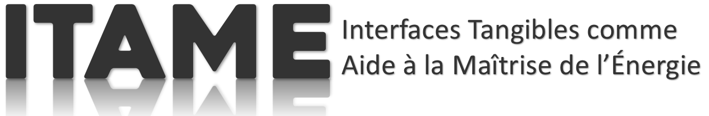
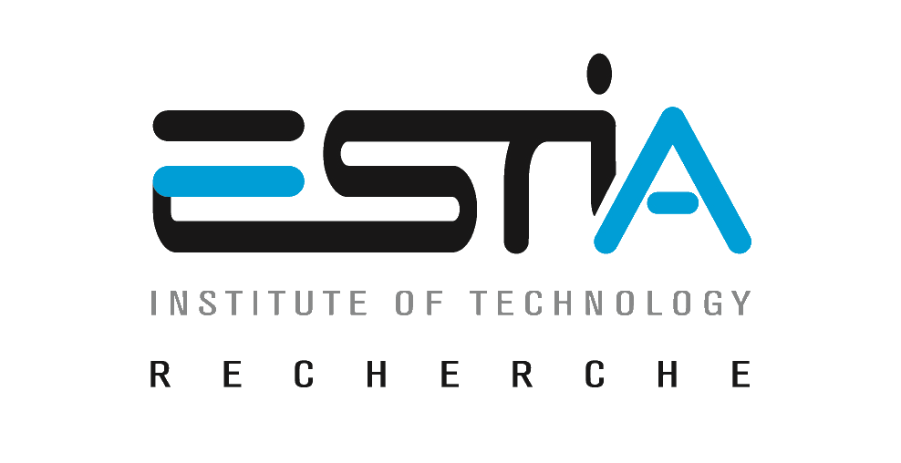

|  |
|
Description
|
ITAME est un projet de Recherche en Interactions Homme-Machine (IHM) qui s’intéresse aux Interfaces Utilisateur Tangibles (TUI) et plus particulièrement à leurs capacités à assister les usagers lors de tâches de gestion de l'énergie sur des lieux d'interaction sociale (e.g. un foyer, une entreprise, un lieu public). |
Institutions

ESTIAÉcole Supérieure des Technologies Industrielles Avancées |
LaBRILaboratoire Bordelais de Recherche en Informatique |
Université de BordeauxUniversité de Bordeaux |
CRAqConseil Régional d'Aquitaine |
Contacts
Maxime DanielDoctorant de la Thèse ITAME |
Guillaume RivièreCo-Directeur de la Thèse ITAME
|
Nadine CoutureCo-Directrice de la Thèse ITAME
|
Sujets d’intérêts

|
Comprendre les réseaux électriques intelligents, les réseaux électriques de DemainLes réseaux électriques classiques sont Aujourd'hui progressivement remplacés par des réseaux électriques intelligents. Cette transition entre ces deux générations de réseaux électriques est également la transition entre deux paradigmes de gestion de l'énergie. L'arrivée de ce nouveau paradigme amené par les réseaux électriques intelligents redéfini la façon même dont la consommation, la production et le stockage de l'énergie sont aujourd'hui gérés.
|
Sensibiliser les usagers Aujourd'hui aux problématiques énergétiques de DemainAvec l'arrivée des réseaux électriques intelligents, il est nécessaire, à la fois, de continuer à sensibiliser les usagers aux problématiques énergétiques d'aujourd'hui mais également aux problématiques énergétiques de demain afin d'assurer une transition pérenne en ces deux générations de réseaux électriques.
|

|

|
Intervenir sur des lieux d'interaction socialeLes lieux d'interaction sociale sont des espaces priviligiés de rencontre et d'échange entre individu. |
Persuader les usagers à adopter des comportements durables pour Aujourd'hui et pour Demain |
|